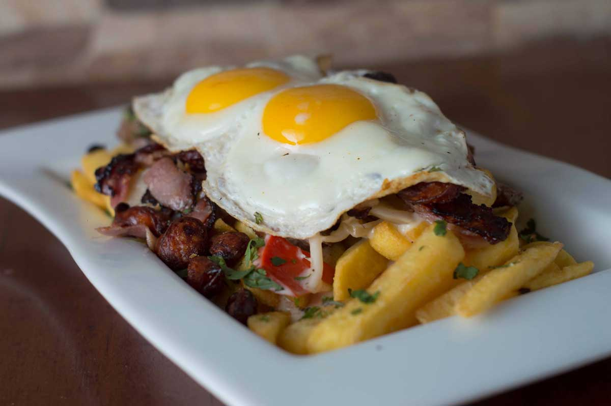

Volver
Chorrillana

Cómo hacer una Chorrillana
Una chorrillana es una comida tradicional chilena, la cual consiste en papas fritas que llevan encima una variedad de coberturas.
Estas coberturas son:
- Cebolla caramelizada
- Carne de pollo
- Carne de vacuno
- Huevos fritos
Ingredientes
- 4 Papas
- 1 Cebolla
- 250g de pechuga de Pollo
- 250g de churrasco de Vacuno
- 3 Huevos
- Salsa de soja
- Miel liquida
Pasos:
- Pelar y cortar las papas en bastones.
- Pelar la cebolla y cortarla en rodajas.
- Cortar los dos tipos de carne en trozos pequeños.
- Cocer las papas en una olla con agua caliente por 10 minutos, hechar en un sartén la cebolla con un poco de aceite y sofreir por 10 minutos.
- Sacar las papas de la olla, y calentar otro sartén con aceite para freirlas, luego revisar la cebolla y hecharle un poco de soja y miel, revolver y esperar 5 minutos.
- Freir las papas y sacar la cebolla cuando esté discretamente comestible.
- Cuando las papas y cebola estén listas, hecharemos a cocer el pollo y luego la carne de vacuno.
- Cuandoe estén listas las carnes, freimos los 3 huevos.
- Luego de tener todo listo, se sirve en un platos las papas fritas, encima le hechamos la cebolla caramelizada cómo una cama para las carnes y encima de las carnes ponemos los huevos fritos.